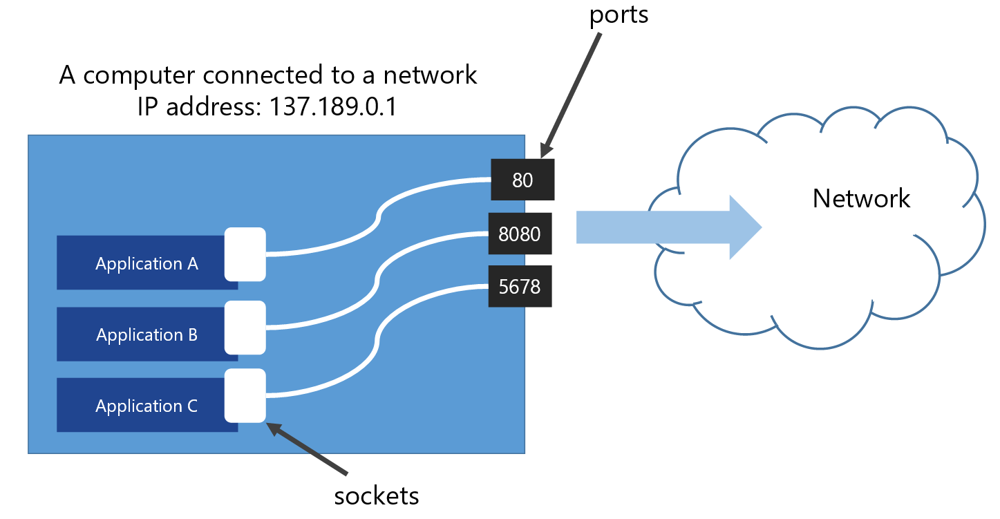

class: center, middle # IEMS 5780<br/>Building and Deploying Scalable<br/>Machine Learning Services ### Lecture 7 - Network Programming #### Albert Au Yeung<br/>18th October, 2019 --- class: center, middle # Computer Networking --- # Data Communication - Exchange of data between two devices using some form of transmission medium - A simplified communication model: <center> </center> - When performing communication, we need **protocols**: rules that govern how data is transmitted in this system --- # Protocols ### What are protocols? - A set of **rules** that govern how communication parties interact with each other - An **agreement** between the communicating entities - Two devices need to agree on common protocols when they communicate - Things that a protocol should define: - The format of the **addressing scheme** - How do we specify the **start** and **end** of a data stream? - How do we **handle errors** or data loss? - How to handle problems in data transfer? - ... --- # Protocols ### An example: TCP's three way handshake <center> </center> Reference: [https://hpbn.co/building-blocks-of-tcp/](https://hpbn.co/building-blocks-of-tcp/) --- # Layered Architecture - Computer networks usually adopt a **layered architecture** - Each layer has its own functions, and only interact directly with the one **above** and **below** it - Protocols are used to allow entity (e.g. a program) in one host to communicate with another entity in another host on the **same** layer ### Question - Why do we want to have a *layered* architecture? - Consider the example in the next slide --- # Layered Architecture - Imagine Beethoven is writing a letter to Einstein… <center> </center> --- # Layered Architecture ### The ISO OSI (Open System Interconnection) 7-Layer Model - A **theoretical** model of how a computer network should work - It organises different functions of a network into **seven** different layers - It specifies the interfaces for communication between different layers and different endpoints ### Note: - It is a theoretical model - It is not a program or software - Practical networks may be implemented in a different way --- # OSI Model <center> </center> --- class: split # OSI Model .column-left[ <center> </center> Source: [http://nhprice.com/what-is-ios-model-the-overall-explanation-of-ios-7-layers.html](http://nhprice.com/what-is-ios-model-the-overall-explanation-of-ios-7-layers.html) ] .column-right[ - Describes **what** need to be done to enable data to be sent from one device to another device - Each layer is a collection of similar functions - Each layer serves the layer **above** it - Each layer get services from the one **below** it ] --- # Layered Architecture ### What are the benefits of having a layered architecture? - It allows simplier design and implementation - Each layer focus on different functions - On each layer, protocols can be designed independently - Different applications may choose to implement data communication on different layers depending on their requirements --- # Layered Architecture ### The TCP/IP Protocol Suite <center> </center> --- # TCP/IP <center> </center> --- # Client/Server Model - A process, called a **client**, requests services from a process on another host, called a **server** - The following must be defined - Local host (Source IP address) - Local process (Source port number) - Remote host (Destination IP address) - Remote process (Destination port number) - In client-server model, if we regard the client as the local host, then the server is the remote host, and vice versa --- # TCP/IP ### There are three transport layer protocols defined in the TCP/IP Protocol Suite - **<font style="color: #4455CC">User Datagram Protocol (UDP)</font>** - **<font style="color: #4455CC">Transmission Control Protocol (TCP)</font>** - Stream Control Transmission Protocol (SCTP) - New reliable and message-oriented protocol combines the best features of UDP and TCP - For streaming applications (e.g. video streaming) --- class: split # TCP - The Transport Layer .column-left[ ### Connectionless vs. Connection-oriented - **<font style="color: #994422">Connectionless (UDP)</font>** - No pre-established connection - Packets are not numbered, can arrive out of sequence - No acknowledgement of packets received - **<font style="color: #994422">Connection-oriented (TCP)</font>** - A connection is first established between the sender and the receiver - Has transport layer-level flow and error control - Reliable ] .column-right[ <center> </center> <center> <div style="margin: 20px 0px;">vs.</div> </center> <center> <img src="img/telephone.jpg" width="60%"> </center> ] --- # UDP - User Datagram Potocol ### Characteristics of UDP - UDP is **connectionless** and **unreliable** - Very simple using a minimum of overhead - **Faster** and more efficient for many lightweight or time-sensitive purposes - Suitable for processes sending small messages and does not care much about reliability - Used for multicast and broadcast - Common network applications that use UDP: - Domain Name System (DNS) - Trivial File Transfer Protocol (TFTP) --- # Datagram ### UDP packets, called user datagrams, have a fixed-size 8 bytes header, containing 4 fields 1. **Source port number** - The port number used by the process running on the source host (16-bit) 2. **Destination port number** - The port number used by the process running on the destination host (16-bit) 3. **Length** - 16-bit field that defines the total length of the user datagram, header plus data (actually duplicated with the length field in IP) - UDP length = IP length – IP header’s length 4. **Checksum** - A checksum for the user datagram - *Question: how about IP address?* --- # TCP - Transmission Control Protocol ### TCP: a stream-oriented protocol - Instead of independent datagrams, TCP delivers data as **a stream of bytes** - A large chunk of data is divided into **segments**, these segments are related to one another - TCP creates an environment in which the two processes seem to be connected by an **imaginary tunnel** --- # TCP ### Flow Control - The sending and the receiving processes may not write or read data at the same speed - TCP needs **buffers for storage**, **flow control**, and **error control** - One way to implement the buffer is to use a circular array of 1-byte locations - TCP buffer size is configurable (e.g. buffer size = 2 x bandwidth x delay) (Can be up to megabytes) - UDP does not have buffers and its queue length is relatively smaller --- class: split # TCP .column-left[ - TCP delivers data as **segments** - TCP adds a header to each segment (for control purpose) and delivers the segment to the underlying IP layer for transmission - The segments are encapsulated in IP datagrams and transmitted (The entire operation is transparent to the processes) ] .column-right[ <center> <img src="img/tcp_format.jpg" width="110%"> </center> ] --- class: center, middle # Network Programming and Socket Programming --- # Network Programming - What do we do in network programming? <center> </center> --- # Ports - Ports are **"endpoints of communications"** in a computer's OS - Ports allow different applications running on the same computer to share a single physical link to the network - Each application must bind to a **unique port** (identified by a number) in order to communicate with the network --- # Ports <center>  </center> --- # Ports - Port number is a **16-bit unsigned integer** (i.e. 0 to 65535) - Port numbers are divided into **3 different ranges** (Regulated by the [Internet Assigned Numbers Authority (IANA)](https://www.iana.org/assignments/service-names-port-numbers/service-names-port-numbers.xhtml)) - **Well Know Ports** - (0-1023) Registered for well-known applications - Example: 21 (FTP), 80 (HTTP), 443 (HTTPS), 465 (SMTPS) - **Registered Ports** - (1024-49151) - Registered for other applications - **Dynamic/Private Ports** - (49151-65535) - Can be used by private applications --- # Using netstat - You can use `netstat` to check the active network connections on your computer ```bash $ netstat -a Active Internet connections (servers and established) Proto Recv-Q Send-Q Local Address Foreign Address State tcp 0 0 *:microsoft-ds *:* LISTEN tcp 0 0 localhost:8002 *:* LISTEN tcp 0 0 *:8005 *:* LISTEN tcp 0 0 *:25672 *:* LISTEN tcp 0 0 *:8010 *:* LISTEN tcp 0 0 localhost:mysql *:* LISTEN tcp 0 0 localhost:6379 *:* LISTEN tcp 0 0 *:netbios-ssn *:* LISTEN tcp 0 0 *:http *:* LISTEN tcp 0 0 *:epmd *:* LISTEN tcp 0 0 localhost:8500 *:* LISTEN tcp 0 0 *:ssh *:* LISTEN ``` --- # The Client-Server Model - Many network applications follow the client-server model - In such a model, servers are continuously running to wait for the request from clients <center> </center> --- # The Client-Server Model ### Note: - **“Client”** and **“server”** here refer to the role of the program at some instance - One application can be running both a client and a server at the same time - A mobile app can be a server, if it is serving data to another mobile app ### Questions: - Can you think of examples of **servers** and **clients**? - What would a server program do? What would a client program do? --- # A Server Program ### What does a server program do? <center> </center> --- # A Client Program ### What does a client program do? <center> </center> --- class: center, middle # Socket Programming in Python --- # Sockets - Used to identify a program (process) on a computer (host) - A socket is defined by two numbers: 1. **IP Address** (identifies the host) 2. **Port number** (identifies the process) - The commonly used implementation is called [Berkeley Sockets](https://en.wikipedia.org/wiki/Berkeley_sockets) or [POSIX sockets](https://en.wikipedia.org/wiki/POSIX) - Whenever a process on a host needs to talk to another process on another host, sockets must be created - **Sockets in Python** is an object-based interface to the low-level operating system calls that are normally used to accomplish networking tasks on POSIX-compliant operating systems - It exposes the normal **POSIX calls** for raw UDP and TCP connections --- # Server ### The Steps to create a server program 1. **Create** a socket object in your program 2. **Bind** the socket object to a socket in the computer 3. **Listen** for incoming connection from clients 4. **Loop**: 1. **Accept** connection from a client 2. **Do** some stuff 3. **Send** response to client (if necessary) 4. **Close** the connection --- # Using Sockets in Python ```python import socket # create an INET socket server_socket = socket.socket(socket.AF_INET, socket.SOCK_STREAM) # bind the socket to the host and a port server_socket.bind((socket.gethostname(), 50001)) # Listen for incoming connections from clients server_socket.listen(10) ``` - **socket** is a module in the standard library that provides access to the socket interface [https://docs.python.org/3/library/socket.html](https://docs.python.org/3/library/socket.html) - `socket.socket()` returns a new socket - `socket.AF_INET` specifies that the socket will use the IPv4 family of address - The second argument can either be `socket.SOCK_STREAM` (TCP) or `socket.SOCK_DGRAM` (UDP) --- # Using Sockets in Python ```python import socket # create an INET socket server_socket = socket.socket(socket.AF_INET, socket.SOCK_STREAM) # bind the socket to the host and a port server_socket.bind((socket.gethostname(), 50001)) # Listen for incoming connections from clients server_socket.listen(10) ``` - `server_socket` is an instance (object) of the socket class - `socket.gethostname()` will return the name of the machine (try it yourself), this tells the socket to bind to interface that is visible to the public - Instead, you can provide `"localhost"`, `"127.0.0.1"`, or even an empty string `""` - `50001` is the port number that you want the socket to bind to --- # Using Sockets in Python ```python import socket # create an INET socket server_socket = socket.socket(socket.AF_INET, socket.SOCK_STREAM) # bind the socket to the host and a port server_socket.bind((socket.gethostname(), 50001)) # Listen for incoming connections from clients server_socket.listen(10) ``` - **NOTE**: `bind()` accepts only one argument, which is a tuple `(host_name, port_number)` - Ask the socket to listen for incoming connection by using `listen()` - `listen(10)` means that there can be at most 10 clients waiting in the queue (10 is the size of the **backlog**) --- # A TCP Server ### Remember the steps? 1. <s>**Create** a socket object in your program</s> 2. <s>**Bind** the socket object to a socket in the computer</s> 3. <s>**Listen** for incoming connection from clients</s> 4. **Loop**: 1. **Accept** connection from a client 2. **Do** some stuff 3. **Send** response to client (if necessary) 4. **Close** the connection --- # A TCP Server ```python # ... # A indefinite loop while True: # accept connections from outside (client_socket, address) = server_socket.accept() # Read data from client and send it back data = client_socket.recv(1024) client_socket.sendall(data) # Close the socket client_socket.close() ``` - `accept()` is a **blocking** call (wait until a client tries to connect) - `recv(1024)` attempts to read 1,024 bytes from the client (also blocking) - `sendall(data)` attempts to send all bytes of `data` to the client --- # Sending and Receiving Data ### Behavour of `send()` - We used `sendall()` in the above example to send data, which waits until ALL data has been sent out - `send()` is a more generic function, which may or may not send out all data at once ```python >>> len(data) 50000 >>> client_socket.send(data) 34582 ... ``` - NOTE: TCP is a streaming protocol (remember `SOCKET.SOCK_STREAM`?), it does not have the concept of messages or records --- class: split # A TCP Server .column-left[ ### Notes: - During `accept()`, a **new** socket is created and used solely for communication with that particular client - Even though the client may send all data at the same time, `recv()` may not receive the data altogether - `recv()` is a blocking function here - It will not return until some data is received in the buffer - If it returns an empty string, it means that the client has **disconnected** (the connection is broken) ] .column-right[ <center> </center> ] --- # A TCP Client ```python import socket # create an INET TCP socket soc = socket.socket(socket.AF_INET, socket.SOCK_STREAM) # connect to the server (change localhost to an IP address if necessary) soc.connect(("localhost", 50001)) # Send a message to the server soc.send("Hello Server!".encode("utf-8")) # Receive data from the server data = soc.recv(1024) print(data.decode("utf-8")) # Always close the socket after use soc.close() ``` --- # Sending and Receiving Data ### Behaviour of `recv()` - It **blocks** until some data has arrived, and then it returns the data - Even though the client sends everything in one go, the data might NOT be received at the server in all in one block (due to the nature of underlying IP network) - If it returns with an empty string, it means that the connection has **dropped** ### Question - How do you know when to **stop** receiving? --- # A Protocol on Top of TCP ### Design your own protocol to exchange data between server and client 1. **Fixed length message** - A message is always of the same length (e.g. 1024 characters) - Call `recv` until you get the whole message 2. **Delimit your message** - Add a special string (e.g. `"##THE END##"`) at the end of a message - Call `recv` until you see that special string 3. **Indicate message length in a header** - Include a fixed length header at the beginning of the message - Call `recv` to get the header to determine message lenght, and then call `recv` until message is received --- # An Example of Fixed Lenght Message ```python # Fixed length of a message MSG_LENGTH = 2048 # Use a list to hold parts of the message received parts = [] bytes_received = 0 while bytes_received < MSG_LENGTH: part = soc.recv(min(MSG_LENGTH - bytes_received, 1024)) if part == b'': raise Exception("Connection is lost") parts.append(part) bytes_received += len(part) # Join the parts into a single message message = b"".join(parts) ``` --- # UDP Server ```python import socket # Note, the second parameter for socket() is socket.SOCK_DGRAM) server_socket = socket.socket(socket.AF_INET, socket.SOCK_DGRAM) # Bind it to an IP address and a port server_socket.bind((socket.gethostname(), 50001)) while True: # data is the data sent from a client # address is the IP address of the client data, address = server_socket.recvfrom(1024) ``` - we no longer need to call `listen()` - we no longer need to call `accept()` (no connection will be established) --- # UDP Client ```python import socket client_socket = socket.socket(socket.AF_INET, socket.SOCK_DGRAM) # Server address and port number, and message to be sent server_address = ("localhost", 50001) message = "I love socket programming in Python!" bytes_send = client_socket.sendto(message, server_address) # Close the socket socket.close() ``` --- class: center, middle # End of Lecture 7